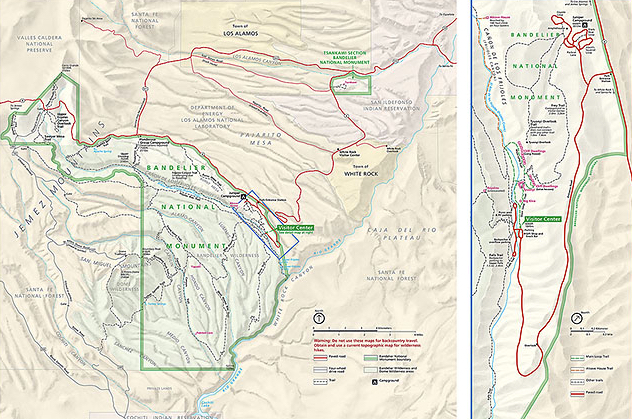

Bandelier National Monument Index of Hikes
Bandelier National Monument has within its boundaries a great diversity of geology and ancient cultural history. In its 50 square miles of territory, situated on the Pajarito Plateau in the Jemez Mountains, many trails penetrate not only the nearby ruins, but a variety of terrains with elevation change of over 5,000 ft. Some of the longer hikes into the interior require permits and overnight camping. Named after an archaeologist named Adolph Bandelier, the park has worked diligently with the cooperation of the pueblo peoples of New Mexico. A very nice visitor center offers educational materials, sponsored walks, and also food. During the popular tourist time, from Mid-May to Mid-October, access is obtained via shuttle bus in nearby White Rock. From the visitor center, the primary ruins are within easy reach, as well as some pleasant trails. Unfortunately, the flood of 2011 radically altered the route to the falls, so that the Upper Falls trail no longer also provides access to the Lower Falls. The latest park information can always be found on the NPS site. Check that site for any pending alerts or other messages prior to your visit.
Bandelier Hiking & Walking Opportunities:
| Trail | Trail Distance | Elevation | Site Page |
|---|---|---|---|
| Nature Trail | 1.2 miles | 200 ft | Main Loop Trail |
| Falls Trail | 3 miles | 300 ft | Upper Falls Trail |
| Frijolito Loop | 2.5 mile | 550 ft | Frijolito Loop Trail |
| Frey Trail | 3 miles | 550 ft | Frey Trail |
| Tyuonyi Overlook | 2.2 miles | 50 ft | <Not Available> |
| Alcove House | 1 mile | 140 ft | Alcove House Trail |
| Tsankawi Ruins | 3 miles | 100 ft | Tsankawi Ruins Trail |
| Burnt Meas | 5 miles | 50 ft | <Not Available> |
| Cerro Grande | 4.6 miles | 1,200 ft | <Not Available> |
| Alamo Boundary | 2.6 miles | 400 ft | <Not Available> |